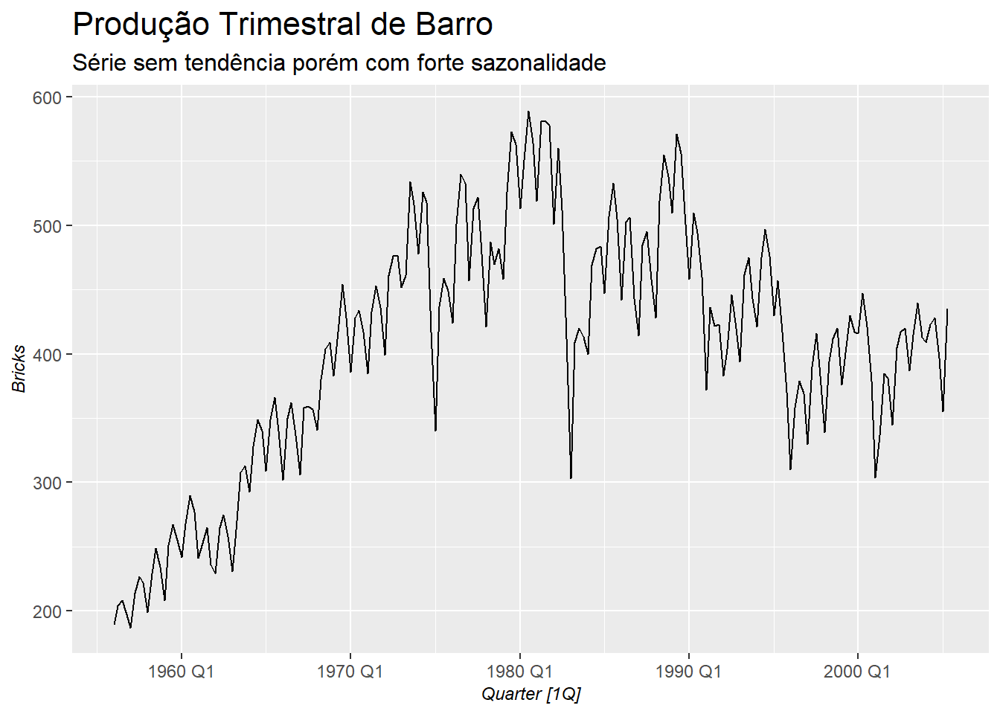
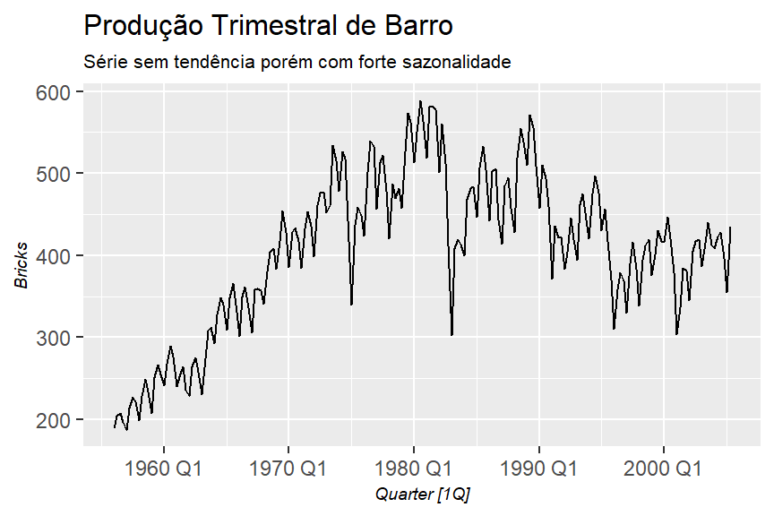
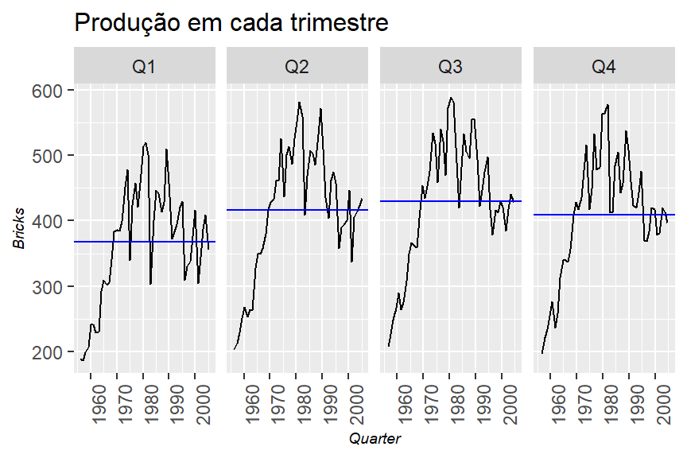
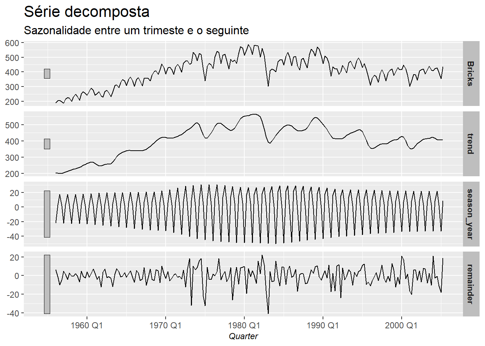
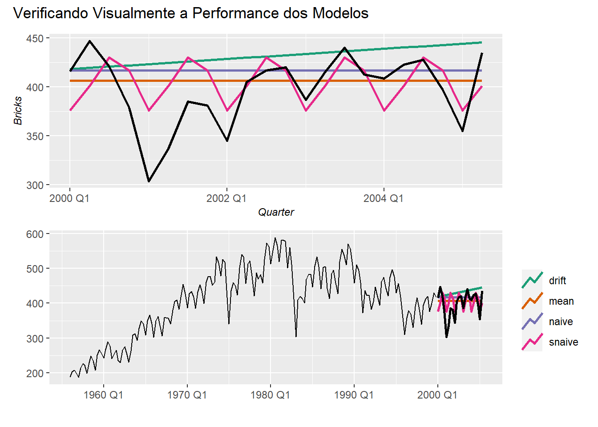
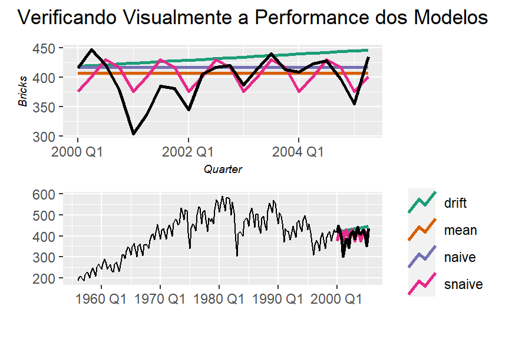

Analisando modelos de Forecasting
Neste post vou desenvolver e analisar diversos modelos de ‘forecasting’ que aprendi após ler livros sobre o tema. A ideia é mostrar, de maneira simples, como rodar estes modelos no R, como analisar a performance e interpretar os resultados.
Neste trabalho eu vou usar os pacotes abaixo, que já contêm vários datasets de exemplo para desenvolvimento do ‘forecast’.
library(GGally)
library(fpp3)
library(fable)
library(tsibble)
library(tsibbledata)
library(feasts)
library(tidyverse)
library(patchwork)
library(seasonal)
library(fma)
# Função para padronizar o design dos gráficos
theme_graph <- function(){
theme(
plot.title = element_text(size = 16),
plot.subtitle = element_text(size = 12),
plot.caption = element_text(face = "italic", size = 9),
axis.text = element_text(size = 9),
axis.title = element_text(face = "italic", size = 9),
strip.background = element_rect(fill = "grey"),
strip.text = element_text(face = "bold"),
legend.position = "bottom",
legend.title = element_blank()
)
}A lista abaixo apresenta os métodos que irei aplicar às séries temporais:
- Average: Média dos valores passados.
- Naive: Último valor da série.
- SNaive: Últimos valores considerando a sazonalidade da série, ou seja, repete o padrão sazonal para o período projetado.
- Drift: Desvio entre o primeiro período (d1) e o último período da projeção. Como se fosse uma linha ligando dois pontos.
- ETS: Suavização Exponencial, sendo médias ponderadas de valores passados, com o peso da média caindo com o tempo.
- Arima: Busca descrever a autocorrelação na série temporal e modelar esta autocorrelação para criar as projeções.
Importante notar que dentro de cada método é possível criar os modelos de previsão. No caso dos métodos ETS (também conhecido como Suavização Exponencial) e Arima, uma infinidade de modelos é possível, onde é preciso estudar a série temporal para escolher o melhor modelo.
Para cada série temporal, irei aplicar as seguintes etapas para poder gerar uma conclusão ao final:
- Análise exploratória da série temporal.
- Segmentação da série temporal em ‘treino’ e ‘teste’.
- Aplicação dos modelos no dataset ‘treino’.
- Validação da performance.
- Conclusões.
Agora vamos por a mão na massa para ver se as conclusões irão valer a leitura.
Produção Trimestral de Barro na Australia
Esta série é obtida no dataset ‘aus_production’ do pacote ‘tsibbledata’.
Análise Exploratória
tsibbledata::aus_production %>%
select(Quarter, Bricks) %>%
filter(!is.na(Bricks)) %>%
feasts::autoplot(Bricks)+
theme_graph()+
labs(title = "Produção Trimestral de Barro",
subtitle = "Série sem tendência porém com forte sazonalidade")
Vamos verificar a sazonalidade entre os trimestres.
tsibbledata::aus_production %>%
select(Quarter, Bricks) %>%
filter(!is.na(Bricks)) %>%
feasts::gg_subseries()+
theme_graph()+
labs(title = "Produção em cada trimestre")
Parece que os trimestres possuem uma sazonalidade estável. Vamos ver, entre um trimestre e o seguinte, a diferença percentual.
tsibbledata::aus_production %>%
select(Quarter, Bricks) %>%
filter(!is.na(Bricks)) %>%
mutate(lag_bricks = lag(Bricks,1),
perc_delta = Bricks/lag_bricks-1) %>%
feasts::autoplot(perc_delta)+
scale_y_continuous(labels = scales::percent)+
labs(title = "Diferença % entre um trimestre e o seguinte")
Agora vamos segmentar a série através do modelo ‘STL’ (Multiple Seasonal Decomposition by Loess). Este modelo irá decompor a série em Sazonalidade, Tendência e Resíduo.
stl <- tsibbledata::aus_production %>%
select(Quarter, Bricks) %>%
filter(!is.na(Bricks)) %>%
fabletools::model(feasts::STL(Bricks))
# Amostra do dataset criado após a decomposição
fabletools::components(stl) %>%
head(10) %>%
knitr::kable(format.args = list(big.mark = ".", decimal.mark = ","))| .model | Quarter | Bricks | trend | season_year | remainder | season_adjust |
|---|---|---|---|---|---|---|
| feasts::STL(Bricks) | 1956 Q1 | 189 | 204,6824 | -22,103518 | 6,4210798 | 211,1035 |
| feasts::STL(Bricks) | 1956 Q2 | 204 | 202,2213 | 3,270554 | -1,4918814 | 200,7294 |
| feasts::STL(Bricks) | 1956 Q3 | 208 | 200,6363 | 17,262705 | -9,8990529 | 190,7373 |
| feasts::STL(Bricks) | 1956 Q4 | 197 | 199,8118 | 1,654780 | -4,4665777 | 195,3452 |
| feasts::STL(Bricks) | 1957 Q1 | 187 | 204,2528 | -22,264318 | 5,0114886 | 209,2643 |
| feasts::STL(Bricks) | 1957 Q2 | 214 | 209,4834 | 3,256947 | 1,2596320 | 210,7431 |
| feasts::STL(Bricks) | 1957 Q3 | 227 | 213,7849 | 17,418423 | -4,2033676 | 209,5816 |
| feasts::STL(Bricks) | 1957 Q4 | 222 | 217,4343 | 1,683168 | 2,8825771 | 220,3168 |
| feasts::STL(Bricks) | 1958 Q1 | 199 | 222,0642 | -22,424785 | -0,6394626 | 221,4248 |
| feasts::STL(Bricks) | 1958 Q2 | 229 | 226,2032 | 3,249909 | -0,4531573 | 225,7501 |
Com este dataset da série decomposta, podemos plotar para ver qual “segmento” é mais forte (uma validação visual).
fabletools::components(stl) %>%
feasts::autoplot()+
theme_graph()+
labs(title = "Série decomposta",
subtitle = "Sazonalidade entre um trimeste e o seguinte")
Sabendo que a série tem este comportamento sazonal e uma certa tendência, podemos testar alguns modelos para ver qual irá ter a melhor performance.
Segmentação em Treino e Teste
O dataset vai de 1956/Q1 até 2005/Q2. Para o treino, vou pegar o período de 1956/Q1 até 1999/Q4, e depois irei fazer o teste no período restante para depois fazer a comparação com os valores reais.
# Dataset de teste
tsibbledata::aus_production %>%
select(Quarter, Bricks) %>%
filter(!is.na(Bricks),
year(Quarter) <= "1999") -> train_dataset
tsibbledata::aus_production %>%
select(Quarter, Bricks) %>%
filter(!is.na(Bricks),
year(Quarter) > "1999") -> test_datasetDesenvolvimento dos Modelos
Para os modelos ‘Mean’, ‘Naive’, ‘Snaive’ e ‘Drift’, não é preciso ajustar parâmetros para se adequar à série temporal. Porém nos modelos do tipo ‘Exponential Smoothing’ e ‘Arima’ este ajuste se faz necessário. O ajuste que farei será para levar em consideração a sazonalidade da série temporal.
# Criando os modelos
model_fit <-
train_dataset %>%
model(
mean = fable::MEAN(Bricks),
naive = fable::NAIVE(Bricks),
snaive = fable::SNAIVE(Bricks),
drift = fable::RW(Bricks ~ drift()),
simp_exp_smooth = fable::ETS(Bricks ~ error("A") + trend("N") + season("A")),
holt_linear_trend = fable::ETS(Bricks ~ error("A") + trend("A") + season("N")),
holt_damped_trend = fable::ETS(Bricks ~ error("A") + trend("Ad", phi = .9) + season("A")),
holt_winter_season_add = fable::ETS(Bricks ~ error("A") + trend("A") + season("A"))
)
# Gerando as previsões para os próximos 22 períodos (quarters), até 2005 Q2
forecasting <- model_fit %>%
forecast::forecast(h = 22)Analisando a Performance
Como são muitos modelos, vou separar em dois grupos para colocar no gráfico e ficar mais fácil de visualizar.
# Plotando os resultados
g1 <-
forecasting %>%
filter(.model %in% c("mean","naive","snaive","drift")) %>%
feasts::autoplot(level = NULL,
size = 1)+
feasts::autolayer(test_dataset,
color = "black",
size = 1)+
scale_color_brewer(type = "qual", palette = 2)+
theme_graph()+
theme(legend.position = "none")
g2 <-
forecasting %>%
filter(.model %in% c("mean","naive","snaive","drift")) %>%
feasts::autoplot(train_dataset,
level = NULL,
size = 1)+
feasts::autolayer(test_dataset,
color = "black",
size = 1)+
scale_color_brewer(type = "qual", palette = 2)+
theme_graph()+
theme(legend.position = "right")+
labs(x = "",
y = "")
g1/g2 + patchwork::plot_annotation(
title = "Verificando Visualmente a Performance dos Modelos"
)
Neste primeiro grupo, evidentemente o modelo ‘Seazonal Naive’ (SNaive) performou melhor. Vamos ver o próximo grupo de modelos.
# Plotando os resultados
g1 <-
forecasting %>%
filter(.model %in% c("simp_exp_smooth",
"holt_linear_trend",
"holt_damped_trend",
"holt_winter_season_add",
"holt_winter_season_mult")) %>%
feasts::autoplot(level = NULL,
size = 1)+
feasts::autolayer(test_dataset,
color = "black",
size = 1)+
scale_color_brewer(type = "qual", palette = 2)+
theme_graph()+
theme(legend.position = "none")
g2 <-
forecasting %>%
filter(.model %in% c("simp_exp_smooth",
"holt_linear_trend",
"holt_damped_trend",
"holt_winter_season_add",
"holt_winter_season_mult")) %>%
feasts::autoplot(train_dataset,
level = NULL,
size = 1)+
feasts::autolayer(test_dataset,
color = "black",
size = 1)+
scale_color_brewer(type = "qual", palette = 2)+
theme_graph()+
theme(legend.position = "right")+
labs(x = "",
y = "")
g1/g2 + patchwork::plot_annotation(
title = "Verificando Visualmente a Performance dos Modelos"
)